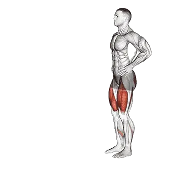

Zancada
Zancada es un ejercicio de piernas centrado en Cuádriceps, Glúteo mayor, Isquiotibiales. Puedes consultar las repeticiones medias y los estándares de repeticiones en una sola página.

Repeticiones medias: Intermedio
Referencia para una persona de nivel intermedio.
Repeticiones medias de Zancada
| Nivel | ||
|---|---|---|
| Principiante | < 1 | < 1 |
| Novato | 10 | 8 |
| Intermedio | 38 | 28 |
| Avanzado | 73 | 54 |
| Élite | 113 | 82 |
Nota: estos valores son estimaciones de repeticiones medias que pueden realizarse en una serie. Pueden variar según el peso corporal, el rango de movimiento, el tempo y otros factores personales. Consulta los datos detallados en la tabla inferior.
Estándares de repeticiones de Zancada
Hombres por peso corporal (kg) [Repeticiones]
| Peso corporal | Principiante | Novato | Intermedio | Avanzado | Élite |
|---|---|---|---|---|---|
| 50 | < 1 | 9 | 41 | 84 | 135 |
| 55 | < 1 | 10 | 41 | 82 | 129 |
| 60 | < 1 | 10 | 40 | 79 | 124 |
| 65 | < 1 | 11 | 40 | 76 | 119 |
| 70 | < 1 | 11 | 39 | 74 | 114 |
| 75 | < 1 | 11 | 38 | 72 | 110 |
| 80 | < 1 | 11 | 37 | 69 | 106 |
| 85 | < 1 | 11 | 36 | 67 | 103 |
| 90 | < 1 | 11 | 35 | 65 | 99 |
| 95 | < 1 | 11 | 35 | 63 | 96 |
| 100 | < 1 | 11 | 34 | 62 | 93 |
| 105 | < 1 | 11 | 33 | 60 | 90 |
| 110 | < 1 | 10 | 32 | 58 | 87 |
| 115 | < 1 | 10 | 31 | 56 | 85 |
| 120 | < 1 | 10 | 30 | 55 | 82 |
| 125 | < 1 | 10 | 30 | 53 | 80 |
| 130 | < 1 | 10 | 29 | 52 | 78 |
| 135 | < 1 | 9 | 28 | 51 | 76 |
| 140 | < 1 | 9 | 27 | 49 | 74 |
Hombres por edad [Repeticiones]
| Edad | Principiante | Novato | Intermedio | Avanzado | Élite |
|---|---|---|---|---|---|
| 15 | < 1 | 6 | 28 | 58 | 92 |
| 20 | < 1 | 10 | 36 | 70 | 110 |
| 25 | < 1 | 10 | 38 | 73 | 113 |
| 30 | < 1 | 10 | 38 | 73 | 113 |
| 35 | < 1 | 10 | 38 | 73 | 113 |
| 40 | < 1 | 10 | 38 | 73 | 113 |
| 45 | < 1 | 9 | 34 | 68 | 106 |
| 50 | < 1 | 7 | 31 | 62 | 98 |
| 55 | < 1 | 4 | 26 | 55 | 88 |
| 60 | < 1 | 1 | 21 | 48 | 78 |
| 65 | < 1 | < 1 | 16 | 40 | 67 |
| 70 | < 1 | < 1 | 12 | 33 | 57 |
| 75 | < 1 | < 1 | 8 | 26 | 48 |
| 80 | < 1 | < 1 | 5 | 20 | 40 |
| 85 | < 1 | < 1 | 1 | 15 | 33 |
| 90 | < 1 | < 1 | < 1 | 11 | 27 |
Mujeres por peso corporal (kg) [Repeticiones]
| Peso corporal | Principiante | Novato | Intermedio | Avanzado | Élite |
|---|---|---|---|---|---|
| 40 | < 1 | 8 | 31 | 62 | 97 |
| 45 | < 1 | 8 | 31 | 59 | 92 |
| 50 | < 1 | 9 | 30 | 57 | 87 |
| 55 | < 1 | 9 | 30 | 55 | 83 |
| 60 | < 1 | 9 | 29 | 53 | 80 |
| 65 | < 1 | 9 | 28 | 51 | 76 |
| 70 | < 1 | 9 | 27 | 49 | 73 |
| 75 | < 1 | 9 | 26 | 47 | 70 |
| 80 | < 1 | 9 | 25 | 45 | 67 |
| 85 | < 1 | 9 | 24 | 44 | 65 |
| 90 | < 1 | 9 | 24 | 42 | 62 |
| 95 | < 1 | 8 | 23 | 41 | 60 |
| 100 | < 1 | 8 | 22 | 39 | 58 |
| 105 | < 1 | 8 | 21 | 38 | 56 |
| 110 | < 1 | 7 | 20 | 37 | 54 |
| 115 | < 1 | 7 | 20 | 35 | 52 |
| 120 | < 1 | 7 | 19 | 34 | 51 |
Mujeres por edad [Repeticiones]
| Edad | Principiante | Novato | Intermedio | Avanzado | Élite |
|---|---|---|---|---|---|
| 15 | < 1 | 3 | 20 | 41 | 66 |
| 20 | < 1 | 8 | 27 | 52 | 79 |
| 25 | < 1 | 8 | 28 | 54 | 82 |
| 30 | < 1 | 8 | 28 | 54 | 82 |
| 35 | < 1 | 8 | 28 | 54 | 82 |
| 40 | < 1 | 8 | 28 | 54 | 82 |
| 45 | < 1 | 7 | 25 | 49 | 76 |
| 50 | < 1 | 5 | 22 | 45 | 70 |
| 55 | < 1 | 2 | 18 | 39 | 62 |
| 60 | < 1 | < 1 | 14 | 33 | 54 |
| 65 | < 1 | < 1 | 10 | 27 | 46 |
| 70 | < 1 | < 1 | 7 | 21 | 39 |
| 75 | < 1 | < 1 | 3 | 16 | 31 |
| 80 | < 1 | < 1 | < 1 | 11 | 25 |
| 85 | < 1 | < 1 | < 1 | 8 | 19 |
| 90 | < 1 | < 1 | < 1 | 5 | 14 |
Nota: los valores de la tabla son una referencia de repeticiones posibles en una serie. Usa los datos por peso corporal para estimar la carga relativa y los datos por edad para ver tendencias.
Registra y analiza en la app Shiba
Consulta pesos, repeticiones y progreso en un solo lugar.
Récord mundial
Actualizado: July 2, 2026
Cómo leer la tabla
| Nivel | Descripción | Distribución |
|---|---|---|
| Principiante | Domina la técnica correcta y entrena de forma constante durante al menos 1 mes. | Parte inferior 5% |
| Novato | Entrena de forma constante durante al menos 6 meses. | Top 80% |
| Intermedio | Entrena de forma constante durante al menos 2 años. | Top 50% |
| Avanzado | Entrena de forma constante durante más de 5 años. | Top 20% |
| Élite | Entrena este ejercicio de forma especializada durante más de 5 años. | Top 5% |